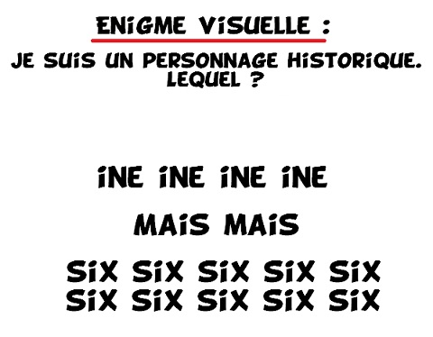
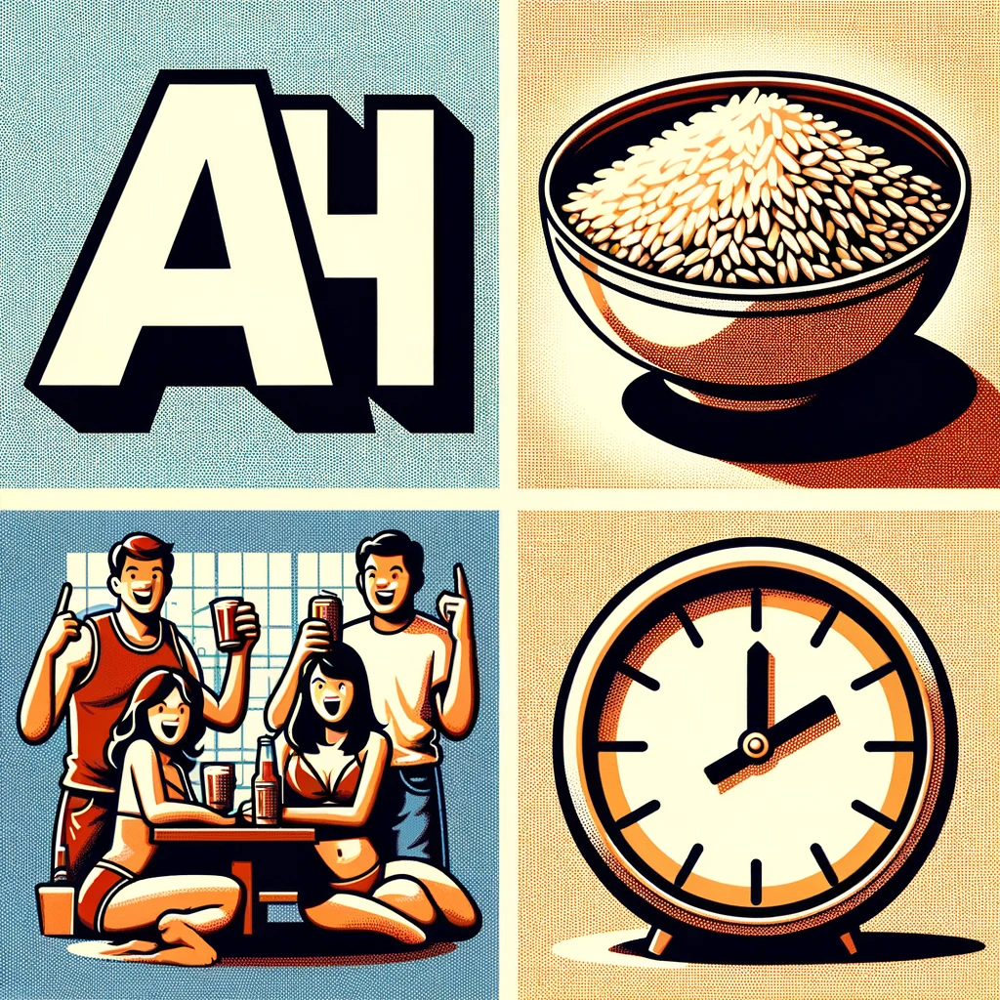

🧩 Suspect : L'Ancienne Élève
🔙 Retour aux suspects
Élève brillante mais mystérieuse, elle entretenait une relation particulière avec la professeure d’anglais.
Elle semble vouloir aider à l’enquête, mais certains indices l'impliquent directement… à vous de démêler le vrai du faux.
Énigme 1 - Rébus visuel #1
Une image codée a été trouvée dans le cahier de l'élève. Il s’agit d’un rébus qui pourrait révéler une information essentielle sur le lieu de la disparition.

Énigme 2 - Rébus visuel #2
Un second rébus a été retrouvé, cette fois-ci griffonné au dos d’un emploi du temps.
Il semblerait que ces images codées aient été destinées à quelqu’un d’autre…

Énigme 3 - Le numéro à composer
Un numéro a été découvert dans une ancienne note de la professeure.
En l’appelant via Lockee, un message enregistré pourrait révéler un élément crucial de l’affaire.
Énigme 4 - L’événement d’escalade
En fouillant dans les réseaux sociaux de l’élève, les enquêteurs découvrent qu’elle a assisté à un événement d’escalade récent à Genève.
Un lien avec la disparition pourrait être caché dans les détails de cette sortie sportive.En quelle année a-t-on vu la bataille de l'escalade à Genève?
Énigme 5 - La preuve d’innocence
Finalement, un élément décisif est retrouvé : une preuve qui semble disculper complètement l'élève.
Elle n’aurait donc rien à voir avec la disparition ?
Fin de l’enquête sur ce suspect
Retour aux suspects